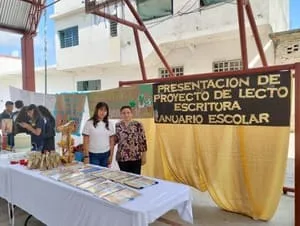
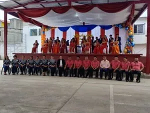
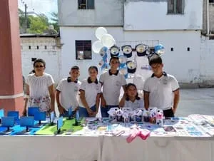

Acceso Directo y Fácil
Instala "Héroes Conectados" directamente en la pantalla de inicio de tu teléfono o computadora para un acceso instantáneo, ¡sin necesidad de tiendas de aplicaciones!
Cargando...
Conoce nuestra propuesta educativa integral y de calidad en Coronel Tito Hernández, V. Carranza, Puebla.
El proceso de inscripción para el ciclo escolar 2025 - 2026 estará abierto en Agosto.
¡Prepárate para ser parte de la familia "Héroes de la Patria"!
___________________
Más Información sobre AdmisionesCelebramos a nuestros alumnos con actividades especiales.
¡No te pierdas la conmemoración del Día del Estudiante este 11 y 12 de Junio del 2025!
Modelo por competencias que desarrolla conocimientos, habilidades y valores.
Proyectos CTIM ganadores y vinculación con necesidades reales de la comunidad.
Uso responsable de la tecnología como herramienta de crecimiento y aprendizaje.
Fomentamos el respeto, la responsabilidad y la honestidad en un ambiente de confianza.
Historia del Bachillerato de la Patria, Fundación:
El Bachillerato de la Patria tiene sus orígenes en 1996, cuando un grupo de maestros que trabajaban en un bachillerato particular llamado "Juan Rulfo" en la comunidad de María Andrea, decidieron unirse con la visión de fundar una nueva institución educativa pública, que formara parte del sistema oficial y no fuera de carácter particular.
Los principales fundadores de esta institución fueron:
• Profesora Hercilia Aburto Nadales (quien era directora del Bachillerato Juan Rulfo)
• Profesor Toribio Bautista Hernández
• Profesor Hidelgardo Montiel Aparicio
• Profesor Moisés Flores Vásquez
• Profesor Lino Celso Espinoza Islas
• Profesor Mayorico Ponce Badillo
• Maestra Humberta Flores Martínez
Este grupo de educadores visualizó la necesidad de crear un bachillerato oficial en la zona para beneficiar a los jóvenes de María Andrea y las comunidades circunvecinas.
Proceso de establecimiento
Durante el proceso de fundación, el equipo docente inicial:
1. Contactó con el sindicato de SETEP para tramitar la clave oficial del bachillerato
2. Incorporó a una pedagoga al equipo fundador
3. Utilizó temporalmente las instalaciones de una telesecundaria mientras se establecía formalmente
Primeros años
En 1997, los maestros fundadores se desplegaron por María Andrea y las comunidades aledañas para reclutar estudiantes. Sus esfuerzos dieron fruto con la inscripción de 70 estudiantes de diversas edades en la primera generación, lo que permitió alcanzar la matrícula necesaria para obtener la clave oficial.
Ese mismo año (1997):
• Se recibió oficialmente la clave del Bachillerato
• El profesor Lino y el profesor Moisés obtuvieron plazas oficiales en 1997
• La institución comenzó a funcionar formalmente como "Bachillerato General Estatal Oficial"
En 1998, se incorporaron de manera oficial el profesor Mayorico y la maestra Humberta, continuando así la consolidación del proyecto educativo que había iniciado como un sueño compartido por un grupo de docentes comprometidos con la educación pública.
Desde entonces, el Bachillerato Héroes de la Patria ha servido a la comunidad de María Andrea y sus alrededores, formando a generaciones de estudiantes y constituyéndose como una importante institución educativa en la región.
Somos una institución educativa de nivel medio superior formadora de estudiantes integrales, analíticos, reflexivos y críticos con los conocimientos, habilidades y valores necesarios para poderse integrar al sector productivo o continuar sus estudios a nivel superior.
Ser una institución educativa de excelencia que logre la formación de seres humanos integrales con valores y aprendizajes significativos contextualizados que permitan contribuir al desarrollo regional, estatal y nacional de nuestro país.
Conoce a quienes dirigen y colaboran en "Héroes de la Patria".
ING. SAMUEL CRUZ INTERIAL
Director
Director
Formación: Ingeniero en Electronica y Comunicaciones
Experiencia: Más de 23 años en docencia y 7 años en liderazgo educativo.
Responsabilidades: Liderazgo y gestión integral del bachillerato, supervisión académica y administrativa, vinculación con la comunidad y desarrollo de proyectos educativos innovadores.
"Formando líderes con propósito."

LIC. MARIA SOLEDAD HDEZ. HDEZ.
Tutora y Docente
Tutora y Docente
Formación:[COMPLETAR DESCRIPCIÓN]
Experiencia: [COMPLETAR DESCRIPCIÓN]
Responsabilidades: [COMPLETAR DESCRIPCIÓN]
"[COMPLETAR DESCRIPCIÓN]"
ING. NEMESIO LOYDA LOPEZ
Docente
Docente
Formación:[COMPLETAR DESCRIPCIÓN]
Experiencia: [COMPLETAR DESCRIPCIÓN]
Responsabilidades: [COMPLETAR DESCRIPCIÓN]
"[COMPLETAR DESCRIPCIÓN]"

ING. ALEJANDRA MARTINEZ LUNA
Docente
Docente
Formación:[COMPLETAR DESCRIPCIÓN]
Experiencia: [COMPLETAR DESCRIPCIÓN]
Responsabilidades: [COMPLETAR DESCRIPCIÓN]
"[COMPLETAR DESCRIPCIÓN]"
LIC. ANA LILIA PEREZ HERNANDEZ
Docente
Docente
Formación:[COMPLETAR DESCRIPCIÓN]
Experiencia: [COMPLETAR DESCRIPCIÓN]
Responsabilidades: [COMPLETAR DESCRIPCIÓN]
"[COMPLETAR DESCRIPCIÓN]"

LIC. CLAUDIA GONZALEZ WIDOBRO
Docente
Docente
Formación:[COMPLETAR DESCRIPCIÓN]
Experiencia: [COMPLETAR DESCRIPCIÓN]
Responsabilidades: [COMPLETAR DESCRIPCIÓN]
"[COMPLETAR DESCRIPCIÓN]"

ING. JOSE ALAIN ROSALES GARCIA
Docente
Docente
Formación:Ingeniero Químico (UV)
Experiencia:16 años de experiencia entre la industria y la docencia
Responsabilidades:Enseñanza, investigación, asesoramiento, desarrollo curricular, actividades académicas y promoción de la seguridad
"Transformando la curiosidad en conocimiento y el conocimiento en innovación"

LIC. HUMBERTA FLORES MARTINEZ
Docente
Docente
Formación:Lic. en Pedagogía (UV), Maestría en Desarrollo Educativo (UNIPUEBLA) e inglés académico.
Experiencia:5 años en trabajo social, 3 en RH, y 27 como docente en bachillerato. Experiencia en educación y gestión institucional.
Responsabilidades:Enseñar, evaluar, inspirar y colaborar para una educación de calidad, promoviendo el desarrollo integral de los estudiantes y la innovación educativa.
"La vida es muy hermosa… pero muy corta, perdona, ayuda, agradece, ama, sonría y se feliz"
LIC. NICOLAS CRUZ VAZQUEZ
Docente
Docente
Formación:[COMPLETAR DESCRIPCIÓN]
Experiencia: [COMPLETAR DESCRIPCIÓN]
Responsabilidades: [COMPLETAR DESCRIPCIÓN]
"[COMPLETAR DESCRIPCIÓN]"
LIC. ROSA ELVIRA TORRES ORTEGA
Docente
Docente
Formación:[COMPLETAR DESCRIPCIÓN]
Experiencia: [COMPLETAR DESCRIPCIÓN]
Responsabilidades: [COMPLETAR DESCRIPCIÓN]
"[COMPLETAR DESCRIPCIÓN]"
LIC. ROSELIA ESTRADA LECHUGA
Docente
Docente
Formación:Lic. en Pedagogía con Especialidad en Ciencias Sociales (ICEST)
Experiencia:Más de 22 años de experiencia docente
Responsabilidades:Organizar clases, impartir conocimientos a los alumnos, fomentar valores positivos desarrollar un ambiente de aprendizaje positivo para los estudiantes
"La empatía es la base de todo entendimiento entre los seres vivos"
LIC. ADRIAN HERNANDEZ CRUZ
Docente
Docente
Formación:[COMPLETAR DESCRIPCIÓN]
Experiencia: [COMPLETAR DESCRIPCIÓN]
Responsabilidades: [COMPLETAR DESCRIPCIÓN]
"[COMPLETAR DESCRIPCIÓN]"

ING. TULIA CECILIA VILLADIEGO BLANCO
Docente
Docente
Formación:Ingeniera Administradora de Sistemas (UANL) y Maestra en Desarrollo Educativo (UNIPUEBLA)
Experiencia:Más de 25 años de experiencia docente, con formación continua a través de diversos cursos y diplomados.
Responsabilidades:Diseño e implementación de estrategias didácticas en áreas técnicas y digitales; acompañamiento académico; evaluación formativa; y coordinación de proyectos de Diseño Grafico.
"Educar con compromiso, transformar con pasión"
LIC. IRMA ALBA FLORES
Administrativo
Administrativo
Formación:Licenciatura en Relaciones Comerciales
Experiencia:Más de 20 años de experiencia administrativa.
Responsabilidades:Tener a tiempo la información en la plataforma SICEP y carpeta administrativa de ISO.
"Todo lo puedo en Cristo que me fortalece. Filipenses 4:13"

LIC. GREGORIO MARTINEZ HERNANDEZ
Administrativo
Administrativo
Formación:[COMPLETAR DESCRIPCIÓN]
Experiencia: [COMPLETAR DESCRIPCIÓN]
Responsabilidades: [COMPLETAR DESCRIPCIÓN]
"[COMPLETAR DESCRIPCIÓN]"

C. RODRIGO RODRIGUEZ PEREZ
Administrativo
Administrativo
Formación:[COMPLETAR DESCRIPCIÓN]
Experiencia: [COMPLETAR DESCRIPCIÓN]
Responsabilidades: [COMPLETAR DESCRIPCIÓN]
"[COMPLETAR DESCRIPCIÓN]"
C. AURELIO FRANCO PARRA
Personal de Apoyo
Personal de Apoyo
Formación:[COMPLETAR DESCRIPCIÓN]
Experiencia: [COMPLETAR DESCRIPCIÓN]
Responsabilidades: [COMPLETAR DESCRIPCIÓN]
"[COMPLETAR DESCRIPCIÓN]"
C. JOSE ALBERTO RIVEROS MONTIEL
Personal de Apoyo
Personal de Apoyo
Formación:[COMPLETAR DESCRIPCIÓN]
Experiencia: [COMPLETAR DESCRIPCIÓN]
Responsabilidades: [COMPLETAR DESCRIPCIÓN]
"[COMPLETAR DESCRIPCIÓN]"
Contamos con instalaciones adecuadas para fomentar un ambiente de aprendizaje óptimo y seguro.
Adoptamos un enfoque por competencias alineado con los estándares educativos nacionales y estatales, enfatizando la aplicación práctica del conocimiento en contextos reales. Formamos estudiantes capaces de Saber, Saber hacer y Saber ser.
Bachillerato General Estatal con un plan de estudios integral y capacitación para el trabajo.
Nuestro plan de estudios está diseñado para proporcionar una formación básica sólida y prepararte para los retos del futuro. Consta de 6 semestres.
Ofrecemos 3 áreas de formación laboral para desarrollar habilidades prácticas:
Aprende a elaborar bocetos, ilustrar, utilizar herramientas digitales y técnicas de impresión para productos gráficos artísticos y publicitarios.
Domina la conservación de frutas y verduras, transformación de cereales, panadería, elaboración de dulces típicos y productos lácteos.
Interpreta croquis, prepara materiales, realiza cortes y ranuras, y coloca elementos para instalaciones básicas de una vivienda.
Requisitos y Documentos:
Fechas Importantes: Preinscripciones en Febrero, Inscripciones en Agosto.
Becas: Todos nuestros estudiantes inscritos pueden acceder a la Beca Benito Juárez.
Para más detalles sobre el proceso, contáctanos o visita la escuela.
Ver Calendario Escolar SEP PueblaOfrecemos diversos servicios para apoyar el desarrollo integral de nuestros estudiantes.
Solicita constancias, historiales académicos y credenciales. Atención ágil y personalizada.
Apoyo psicopedagógico para el desarrollo académico y personal de nuestros estudiantes.
Amplia oferta de talleres deportivos, culturales, cívicos y de conocimientos.
Conoce tus derechos y obligaciones. Fomentamos una convivencia armónica y respetuosa.
Consultar ReglamentoDescubre todo lo que sucede en nuestra comunidad educativa: noticias, eventos y mucho más.
Mantente al día con los últimos acontecimientos, logros y comunicados importantes de nuestro bachillerato.
Nuestro equipo de [Nombre del equipo] obtuvo el [Lugar] lugar con su innovador proyecto sobre [Tema del proyecto]...
Detalles del proyecto: [Añade aquí más detalles sobre el proyecto CTIM, cómo fue la participación, qué desarrollaron, etc. Este texto se mostrará al expandir.]
Felicitamos a los alumnos y docentes involucrados por este gran logro que pone en alto el nombre de nuestro bachillerato.
Información importante para el registro y renovación de la Beca Universal Benito Juárez...
El programa de Becas Benito Juárez busca apoyar a los estudiantes de educación media superior. Es fundamental que los alumnos y padres de familia estén atentos a las fechas de convocatoria, requisitos y procesos de registro.
Para más información y detalles oficiales, visita el portal: gob.mx/becasbenitojuarez.
Revive los mejores momentos de nuestras ceremonias, festivales y actividades escolares.



Consulta las fechas importantes del ciclo escolar y comunicados para padres de familia.
Calendario Escolar SEPPróximamente: Acceso a circulares y comunicados directos para padres y tutores.
¡Héroes de la Patria por siempre! Mantente en contacto y comparte tus logros con nosotros.
Tu trayectoria después de "Héroes de la Patria" nos llena de orgullo. Queremos saber de ti, tus éxitos profesionales, académicos y personales. Tu experiencia es una inspiración para las nuevas generaciones.
Te invitamos a actualizar tus datos y a formar parte activa de nuestra creciente comunidad de egresados.
"El Bachillerato Héroes de la Patria me dio las herramientas y la confianza para seguir mis estudios universitarios en Ingeniería. Los maestros siempre estuvieron ahí para apoyarnos."
- Ana Pérez
Generación 2019-2022, Estudiante de Ingeniería Civil
"Gracias a la capacitación en Preparación de Alimentos, pude iniciar mi propio pequeño negocio. Aprendí mucho sobre técnicas y también sobre emprendimiento."
- Carlos López
Generación 2020-2023, Emprendedor Gastronómico
"Lo que más valoro de mi tiempo aquí fue el ambiente de compañerismo y el enfoque práctico de las clases. La formación en Comunicación Gráfica me abrió muchas puertas."
- Alain Rosales
Generación 2018-2021, Diseñadora Gráfica Jr.
Descubre lo que nuestros egresados y miembros de la comunidad dicen sobre "Héroes de la Patria".
Comprometidos con la rendición de cuentas y el manejo claro de los recursos.
Consulta los cortes de caja y el manejo de recursos de la institución.
Conoce los avances y resultados de nuestros programas de mejora continua.
Accede a la información pública de oficio y enlaces a portales de transparencia gubernamentales.
Consulta los documentos legales y reglamentarios que rigen nuestra institución y el sistema educativo.
Otros documentos relevantes serán añadidos.
Mantente informado sobre las oportunidades y procesos activos en nuestra institución.
Vigencia: 03 al 21 de junio de 2025
Se convoca a los interesados en participar en el proceso para la concesión de la tienda escolar del Bachillerato "Héroes de la Patria" para el ciclo escolar 2025-2026.
Ver Convocatoria Completa (PDF)Recursos y plataformas externas que pueden ser de utilidad para nuestra comunidad educativa.
Accede a trámites y servicios del Instituto Mexicano del Seguro Social de forma digital.
Secretaría de Ciencia, Humanidades, Tecnología e Innovación del Estado de Puebla.
Instituto Nacional de Transparencia, Acceso a la Información y Protección de Datos Personales.
Portal oficial del programa de Becas para el Bienestar Benito Juárez.
Secretaría de Educación Pública del Estado de Puebla.
Sistema de Control Escolar de Puebla para consulta de calificaciones.
Plataforma de registro para el desarrollo profesional docente.
Cursos gratuitos para capacitarse en diferentes áreas laborales.
Lleva tu experiencia escolar al siguiente nivel con nuestra aplicación web progresiva (PWA). Acceso rápido y directo desde tu dispositivo.
Instala "Héroes Conectados" directamente en la pantalla de inicio de tu teléfono o computadora para un acceso instantáneo, ¡sin necesidad de tiendas de aplicaciones!
1. Abre esta página web en tu navegador Chrome.
2. Toca el menú de tres puntos (⋮).
3. Selecciona "Instalar aplicación" o "Agregar a la pantalla principal".
1. Abre esta página web en tu navegador Safari.
2. Toca el icono de Compartir (cuadro con flecha hacia arriba).
3. Desliza hacia arriba y selecciona "Agregar a inicio".
1. Abre esta página web en tu navegador.
2. Busca un icono de instalación (+) en la barra de direcciones.
3. Haz clic y confirma la instalación.
¡Disfruta de un acceso más rápido y una experiencia optimizada!
Encuentra respuestas a las dudas más comunes sobre nuestro bachillerato.
Requisitos básicos:
¡No hay examen de admisión ni promedio mínimo! ¡Todos son bienvenidos!
Documentación adicional si vienes de otra escuela: Kardex para cambios de escuela que sea del mismo subsistema (Bachilleratos Generales). Si vienes de otro subsistema, deberás traer un certificado parcial y solicitar en control escolar del estado una equivalencia.
Nuestro bachillerato general incluye 3 áreas de formación laboral:
Sí, todos nuestros estudiantes inscritos son automáticamente considerados para la Beca Universal Benito Juárez, la cual consiste en depósitos bimestrales. No se requiere un trámite adicional por parte del alumno para la asignación inicial.
Para dudas sobre pagos o estatus de la beca, puedes consultar el portal oficial gob.mx/becasbenitojuarez o acercarte a la coordinación escolar.
Ofrecemos una variedad de actividades para complementar tu formación, incluyendo:
1. Ingresa a http://sisep.seppue.gob.mx/sicepconsulta/
2. Ten a la mano tu CURP y NIA (Número de Identificación del Alumno).
3. Si tienes problemas para acceder o no cuentas con tu NIA, por favor solicita ayuda en la oficina de Control Escolar del plantel.
Cambio de escuela: Solicita tu Kardex para transferencia en Control Escolar (debes estar al corriente en materias). Si vas a cambiar de subsistema necesitaras un certificado parcial y si te vas a cambia a otro Estado necesitaras legalizar tu certificado.
Certificados: Se tramitan al terminar el bachillerato. Requieres: Identificación oficial, Comprobante de liberación de todas las materias, Pago de derechos. Tiempo de entrega: Aproximadamente 30 días hábiles.
Sí, pero es sencillo y económico:
Hombres:
• Deportivo: Playera blanca con logo de la escuela, pantalón azul de mezclilla
• Gala: Camisa blanca con logo de la escuela, pantalón gris Oxford.
Mujeres:
• Deportivo: Playera blanca con logo de la escuela, pantalón azul de mezclilla
• Gala: Blusa blanca con logo de la escuela, falda gris Oxford.
Puede mandarse a hacer con quien guste o confeccionarse en casa.
¡Sí! Nuestros alumnos pueden:
Somos una opción incluyente y práctica porque:
Nuestro programa de bachillerato ofrece las siguientes modalidades:
El horario regular es de lunes a viernes, de 8:00 a.m. a 1:30 p.m.
Actualización de datos en control escolar:
[Mes de Agosto del año en curso]
Puedes solicitar una cita con la tutora escolar, acudir al área de prefectura o enviar un correo a 21ebh0200x.sep@gmail.com. También hay horarios de atención establecidos para consultas.
Certificado completo, parcial o duplicado:
Estamos para servirte. Ponte en contacto con nosotros o visítanos.
Dirección:
C. Manuel Ávila Camacho #7, Col. Centro, C.P. 73030, Coronel Tito Hernández (María Andrea), Venustiano Carranza, Puebla.
Correo Electrónico:
21ebh0200x.sep@gmail.com
Horario de Atención:
Lunes a Viernes de 8:00 am a 1:30 pm
CCT: 2IEBH0200X
Tu opinión es importante para nosotros. Ayúdanos a mejorar.
Encuentra rápidamente la sección que buscas.
Ing. Samuel Cruz Interial
Atención a Alumnos y Padres
Lic. [Nombre Encargado/a]
No hay clases programadas para hoy o aún no has añadido tu horario.
| Hora | Lunes | Martes | Miércoles | Jueves | Viernes |
|---|
Cargando avisos...
Cargando recursos...
¡Tu opinión es importante! Ayúdanos a mejorar dejando tu sugerencia, queja o felicitación de forma anónima (o puedes incluir tu contacto si deseas seguimiento).